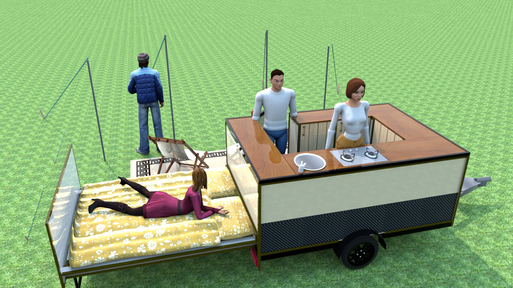
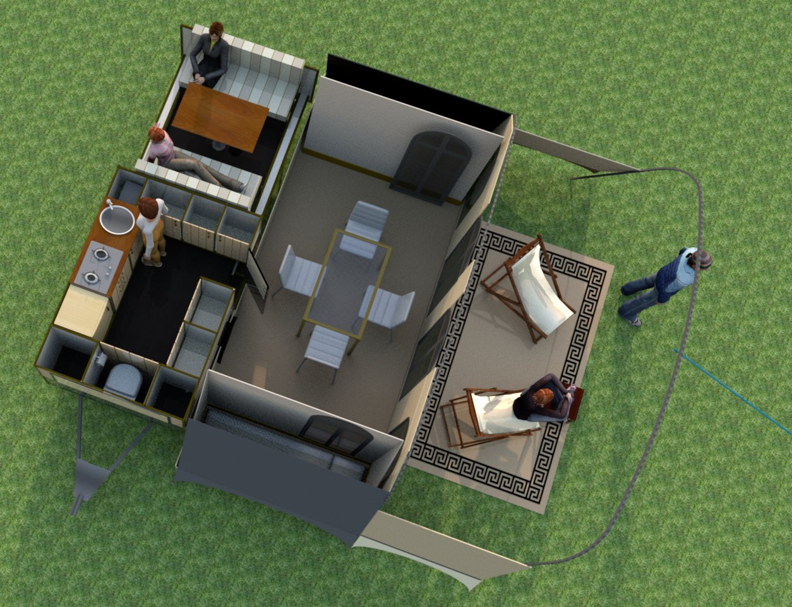
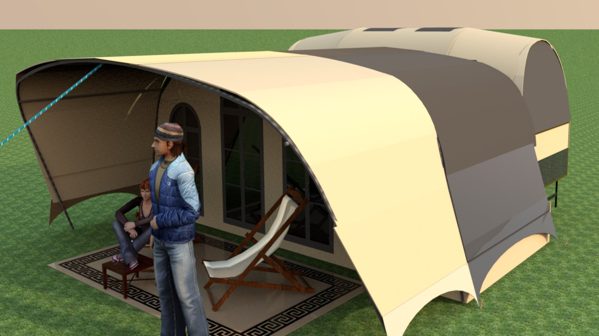
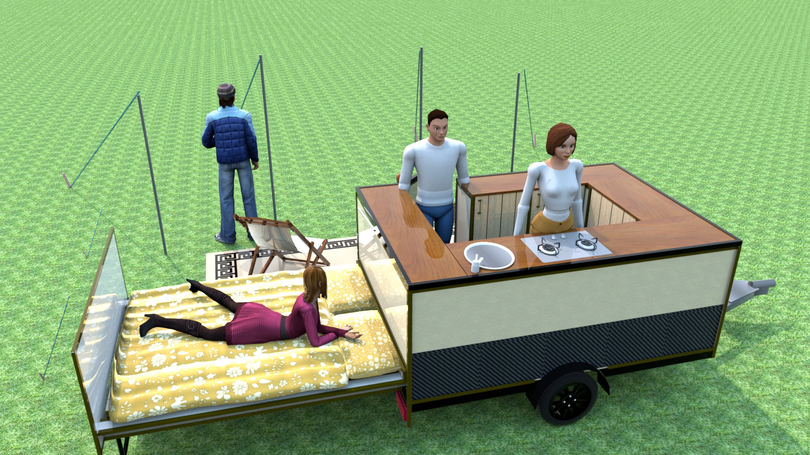
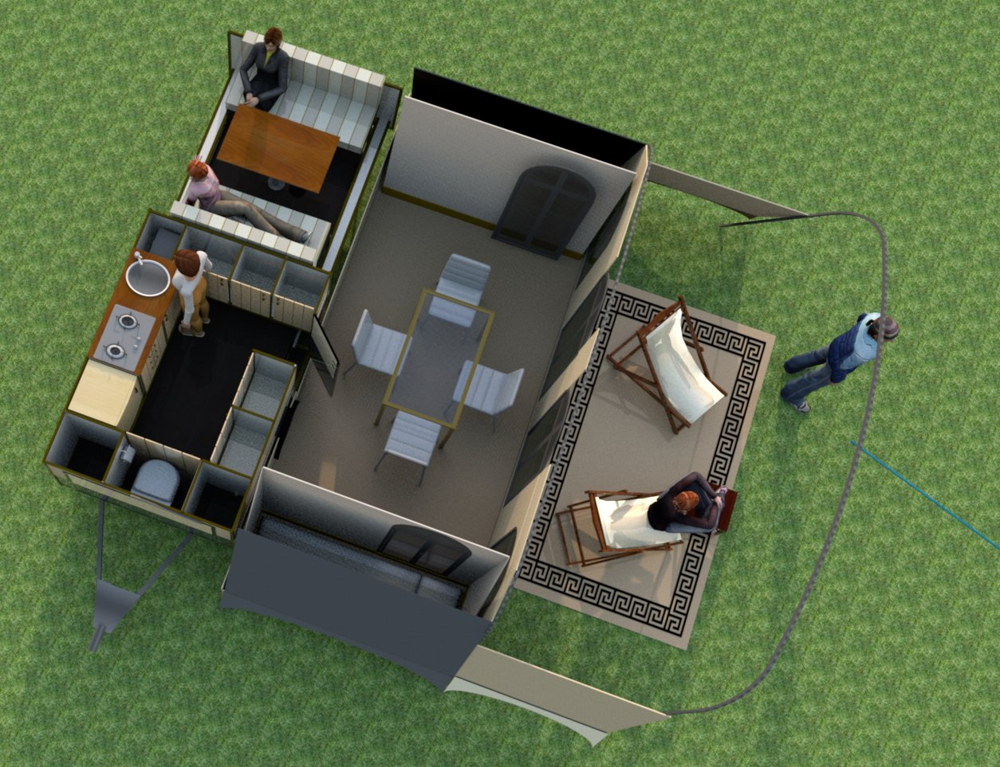
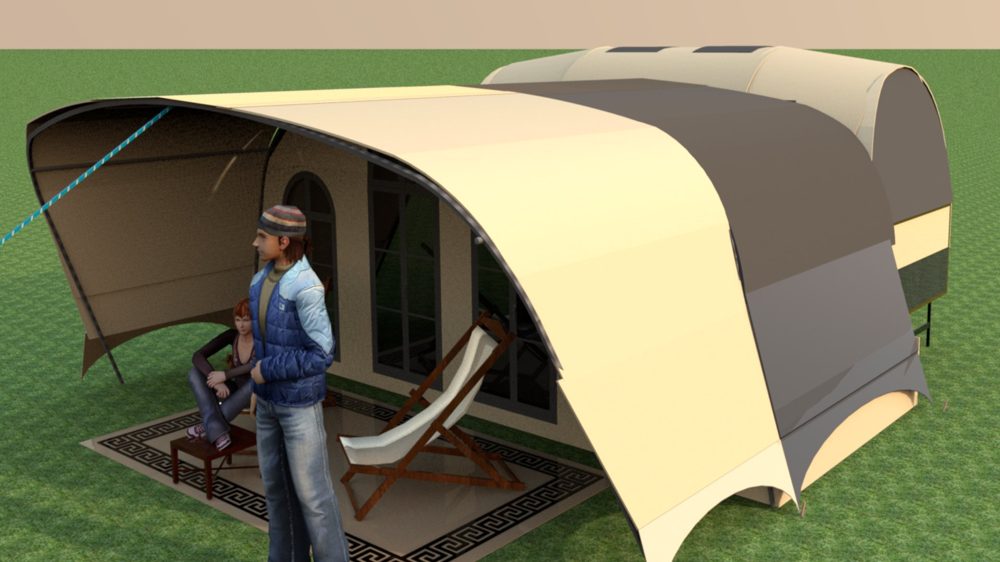

Tringa - het ontwerp
Op deze pagina vindt u informatie over de Tringa, en het ontwerp.
Kenmerken:
tent
- prachtig safari dak in zwaar katoenen tentdoek
- goed ademend tentdoek met aangenaam binnenklimaat
- veel ventilatie-mogelijkheden, alle deuren en ramen voorzien van muskietennet met eigen ritsen
- de tringa heeft twee scheerlijnen, één haakt u in de disselkoppeling, en de andere heeft een haring in de grond
wagen
- zeer stevige maar lichte en compacte geremde aanhangwagen
- zeer compact te stallen, in uw garage, of buiten onder een afdak. Het tentdak en de matrassen haalt u er uit
- Zeer prettig om mee te rijden, technisch verantwoord om 130 km/u mee te rijden (in Frankrijk!)
Bed
- luxe comfortbed van maar liefst 180cm breed. (het ondermatras is 140cm)
- Het bed steunt op kogellagers, en rolt met één handbeweging uit de wagen
- Het bed is zeer licht van gewicht, maar toch ijzersterk. Triplex in verschillende diktes, ijzeren en aluminium profielen worden op ingenieuze wijze gecombineerd tot een ijzersterk geheel
- in een handomdraai is het bed om te bouwen tot een gezillige en comfortabele zit- of eethoek
Toilet
- ruimte voor een chemisch toilet
Bergruimte
- ruime disselbak voor extra bagage
- veel opberg-kasten: al je spullen overzichtelijk en snel beschikbaar
- er hoeft niets uitgepakt of opgesteld te worden: alles zit al op zijn plaats, zoals bij een caravan
Keuken
- complete luxe ingerichte keuken met ruime spoelbak, ruim aanrechtblad, driepits gasvuur en besteklades
Energievoorziening
- warm en koud stromend water, 120 liter watertank, electrische boiler
- Flinke gasfles, mobiele verwarming en mobiele gasgeiser
- Ledverlichting binnen en buiten, regelbaar met dimmers
- Electronisch monitoring-system
- voor en achter extra gas-aansluitingen voor skottelbraai of douche
Luifel en voortent
- Ruime en zeer stevige safari luifel in katoenen tentdoek
- Modulaire voortent met twee extra éénpersoons slaaptenten. Verschillende delen kunnen naar wens aan- of afgeritst worden
Toegankelijk
- het deksel is opklapbaar, zodat u in ingepakte toestand toch gemakkelijk aan uw bagage kunt
Regen
- perfect op te zetten en af te breken in de stromende regen: alles blijft droog
- zeer gemakkelijk op zijn plaats te maneuvreren vanwege het geringe gewicht
Trekken
- de Tringa is zeer geschikt om met twee personen te trekken op comfortabele wijze. Indiende voortent wordt opgezet, kunnen er vier personen in slapen
Foto's van het ontwerp van de Tringa, gemaakt in Sweethome3D:
 




